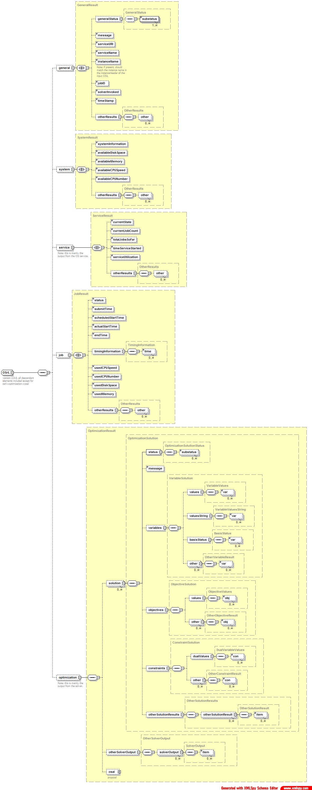

|
 |
|
Optimization Services result Language (OSrL)
Click to see or download the OSrL XML Schema -> OSrL.xsd [actively under development, near stable]
click here to see a description on OSrL.
OSrL (result) is a format for optimization results, mainly returned from optimization solvers.
OSrL can be considered as the conterpart of OSiL (Optimization Services instance Language). OSiL is the input for optimization solvers and OSrL is the output. OSrL is among the OSxL whose contents need to be understood by humans most frequently. Transformation style sheets can be used to allow OSrL to be presented in a clear and nice form. Of course as OSrL is well structured, it can also be analyzed and reused in the middle of a large computation where sub-problems are constantly solved and results are resubmitted for subsequent calculations. The structure and contents of OSrL is based on and driven by the OSiL design. But compared with OSiL, OSrL is more straightforward. The separation of OSrL from OSiL helps in enhancing modularity, flexibility and extensibility, among other benefits.
Major features of OSrL include:
- general results such as generalStatus (success, error, warning), substatus, serviceURI, serviceName, instanceName, jobID, time, message.
- various results related with variables, (e.g. values) objectives (e.g. values), constraits (e.g. dual values) and other optimization related outputs.
- results related with optimization solution such as status (unbounded, globallyOptimal, locallyOptimal, optimal, bestSoFar, feasible, infeasible, stoppedByLimit, unsure, error, other), substatus, message.
- results related with service statistics such as currentState, availableDiskspace, availableMemory, currentJobCount, totalJobsSoFar, timeLastJobEnded, timeLastJobTook, timeServiceStarted, serviceUtilization
- results related with individual jobs including state (waiting, running, killed, finished, unknown), serviceURI, userName, submitTime, startTime, endTime, duration, scheduledStartTime, dependencies, requiredDirectoriesAndFiles.
- support for extended and/or customized solver-specific results
- support for non-numeric solutions such as those returned from combinatorial or constraint programming solvers.
- support for multiple solutions
- support for multiple objectives
- integration of analysis result that are collected during the solution process of the input instance
The following figure illustrates the general OSrL Schema.

Links:
Click to see or download the OSrL XML Schema -> OSrL.xsd
click here to see a description on OSrL.
|
|

{kind=link}